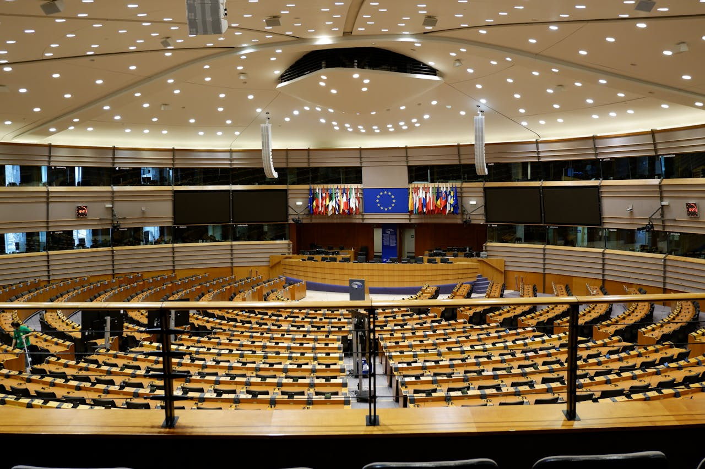
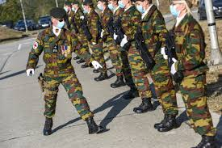
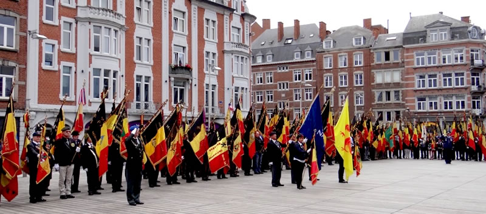
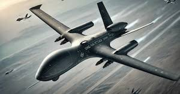
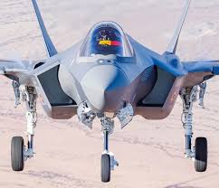
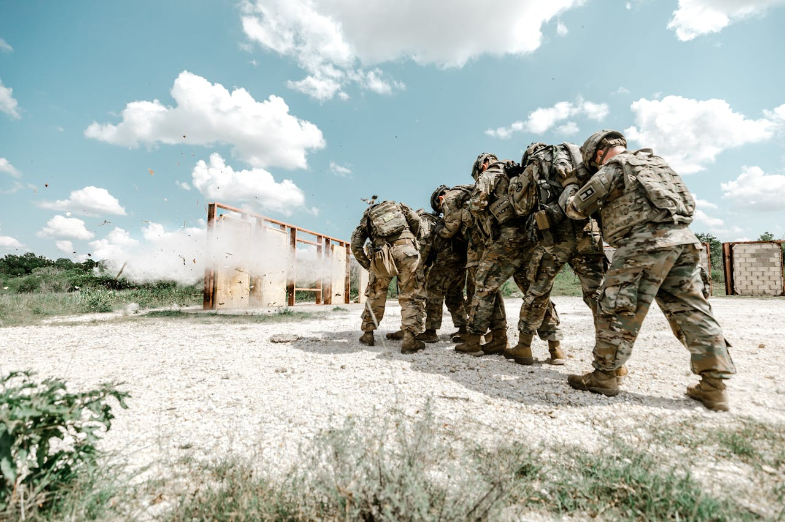
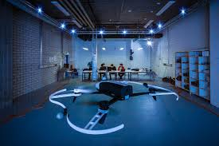

Audit stratégique de l'École Royale Militaire
et du département MECA / RAS Lab

La Défense belge est un Service Public Federal (SPF), placé sous l'autorité du Ministre de la Défense. L'École Royale Militaire (ERM) est un établissement d'enseignement supérieur militaire créé par la loi du 18 mars 1838.
Organisme d'interet public de catégorie A — personnalité juridique propre, soumis à la loi du 16 mars 1954. Pas de numéro BCE classique ni de publication au Moniteur Belge via ejustice.just.fgov.be (réservé aux entités commerciales).
Ministère de la Défense — Ministre Ludivine Dedonder (2020-2024), puis Théo Francken (2025-). Budget voté annuellement par le Parlement federal.
Loi du 18 mars 1838 organique de l'ERM, modifiée par la loi du 1er aout 1924. Arrêté Royal du 26 septembre 2002 fixant le statut du personnel.
En tant que SPF, la Défense ne dépose pas de comptes annuels à la BNB (nbb.be). Son financement provient du budget fédéral, voté par le Parlement.
5,99 milliards EUR — en hausse pour atteindre l'objectif OTAN de 2% du PIB d'ici 2035. Croissance annuelle de ~10% depuis 2022.
Personnel : ~55% | Investissements (équipement) : ~25% | Fonctionnement : ~20%. Le plan STAR prévoit un rééquilibrage vers les investissements.
L'ERM bénéficie d'un budget propre pour la recherche (~15M EUR/an). Le RAS Lab est financé par des projets fédéraux (GRAND, FED-tWIN) et européens (EDF).

Militaires et civils au service de la sécurité nationale
En euros, en croissance vers l'objectif OTAN 2%
Operations internationales OTAN, UE et ONU

Protéger l'intégrité du territoire belge, contribuer a la sécurité collective (OTAN/UE), et apporter une aide à la Nation en cas de crise. Pour l'ERM : former les futurs officiers et mener une recherche scientifique d'excellence au profit de la Défense.
Devenir une force de défense agile, technologiquement avancée et résiliente, capable de répondre aux défis sécuritaires du XXIe siècle. L'ERM vise a etre un pôle d'excellence académique et de recherche reconnu internationalement dans le domaine militaire.
Adaptation du modèle d'Osterwalder à la Défense belge / ERM.

La Défense belge mise sur l'innovation technologique comme multiplicateur de force, via le plan stratégique STAR 2030 et des laboratoires de recherche spécialisés.
Security, Technology, Ambition, Resilience — un plan d'investissement de 10+ milliards EUR sur 10 ans. Acquisition de F-35, navires, drones et systemes de cybersécurité.
Le laboratoire Robotics & Autonomous Systems de l'ERM développe des solutions de navigation GPS-denied, d'essaims de drones et de perception multi-capteurs. Le projet GRAND est financé dans ce cadre.
5e composante créée en 2022, première en Belgique. Cyber-défense, cyber-intelligence et operations offensives dans le domaine numérique.
Partenariats avec universités (VUB, KU Leuven, ULiege), programmes FED-tWIN pour chercheurs partagés, et participation au Fonds Européen de Défense (EDF).

Comparaison de la Défense belge a des forces armées de taille et d'ambition similaires au sein de l'OTAN.
| Critère | Belgique | Pays-Bas | Danemark | Norvege |
|---|---|---|---|---|
| Effectifs | 26 000 | 42 000 | 20 000 | 23 000 |
| Budget (Mrd EUR) | 5,99 | 15,4 | 7,7 | 9,8 |
| % PIB Defense | 1,13% | 1,7% | 1,65% | 1,8% |
| Académie militaire | ERM (1834) | KMA (1828) | FAK (1713) | KS (1750) |
| Innovation R&D | RAS Lab, STAR | TNO | DDI | FFI |
L'ERM se distingue par son intégration recherche-enseignement unique et ses partenariats civils (VUB). Le RAS Lab est reconnu en Europe pour la navigation autonome GPS-denied.
La Belgique reste en dessous de l'objectif OTAN de 2% du PIB, contrairement a la plupart de ses voisins. Le recrutement reste un défi majeur.

Appliquée à une institution publique, la segmentation concerne les "bénéficiaires" et "parties prenantes" de la Défense.
Ciblage : Jeunes de 18-26 ans pour le recrutement, chercheurs doctorants pour l'ERM, PME innovantes pour la défense.
Positionnement : Force armee polyvalente, technologique et déployable, avec un pôle d'excellence académique unique en Belgique.

Analyse du cycle de vie du service de recherche principal du RAS Lab.
Lancement du RAS Lab, premiers prototypes de navigation VIO. Projet GRAND initié avec financement federal. Faible maturité technologique (TRL 3-4).
Multiplication des projets (VIMO, FED-tWIN). Premiers résultats concrets : pipeline ROS2 validé, vols de test. Publications scientifiques. Partenariats européens (EDF). TRL 5-6.
Intégration dans les systèmes opérationnels de la Défense. Transfert technologique vers l'industrie. Standardisation des solutions. TRL 7-9.
Évolution vers des systemes multi-robots, essaims autonomes, et integration IA avancee. Le domaine se réinvente en permanence.
Diagnostic base sur les données budgétaires publiques de la Défense belge (source : SPF Budget, rapports annuels).
Synthèse de l'audit de la Défense belge / ERM.
Le plan STAR 2030 et le contexte géopolitique post-2022 offrent une fenêtre d'investissement sans précédent pour la Défense belge.
L'ERM et le RAS Lab, a l'intersection recherche-défense, sont positionnés pour capter les opportunités IA, drones et cybersécurité.
Le déficit de recrutement et le retard budgétaire (1,13% vs 2% OTAN) restent les faiblesses structurelles majeures à adresser.
Accélérer le transfert technologique du labo vers les unites opérationnelles est la clé pour transformer la recherche en avantage terrain.
Étudiant ingénieur industriel
Master en Électricité & Automatisation
ISIB — Bruxelles